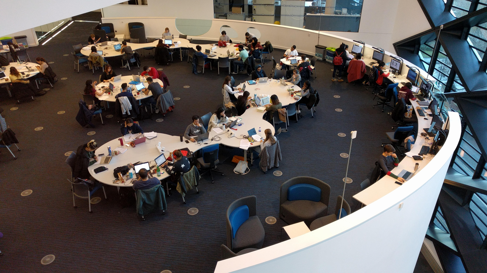
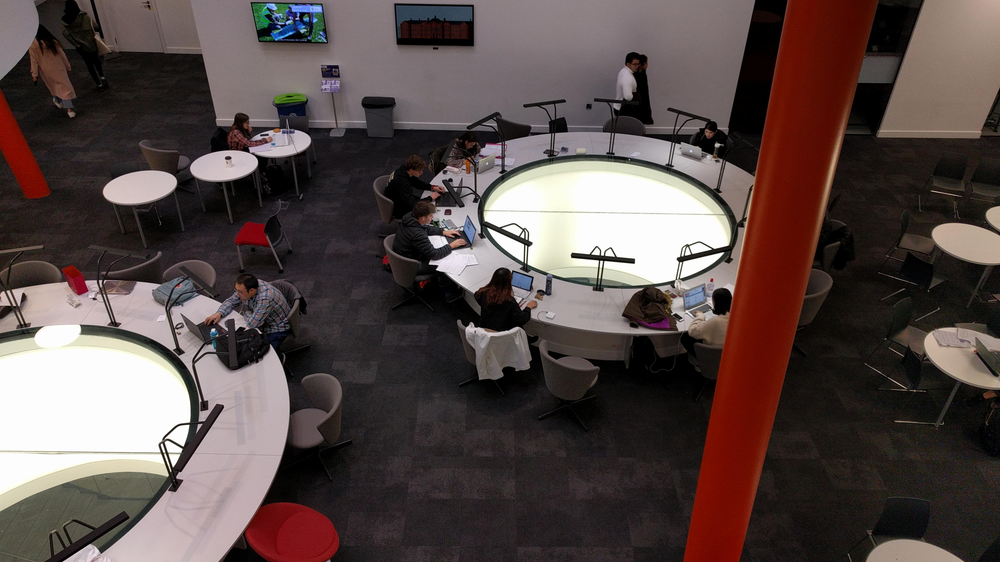

Welcome to Computer Science at The Diamond

This is your guide to the newest, and one of the most important buildings at the University of Sheffield.
This £81 million project opened its doors in 2015 as the new Faculty of Engineering building. The Diamond is the highlight of the University of Sheffield and has been quoted as a unique and inspiring facility that has won Design through Innovation, in the 2016 Yorkshire and Humber Region Royal Institute of Chartered Surveyors award.
In this guide we hope to show you what it is like to study in the Diamond, and to showcase the numerous facilites that the Diamond has to offer you during your first year as a Computer Science Undergraduate at the University of Sheffield.
Take a look at some of the links below to find out more about The Diamond:
- Click to find out more about the Facilities in the Diamond
- Click to find out about a typical day in the life of a Computer Scienist
- Click to find out more about the Diamond Café
